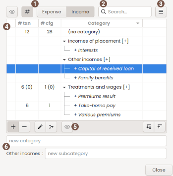

Using categories dialog
 View buttons
View buttons
| Show hidden | Toggle show/hide of hidden categories |
|---|---|
| Show usage | Toggle show/hide usage columns |
| Type switcher | Toggle the category list with Expense/Income categories only |
 Quick search
Quick search
A quick search text filter. You can use CTRL+F to activate and ESC to clear.
 Menu Button
Menu Button
| Import CSV | Import and merge some categories from a CSV file |
|---|---|
| Export CSV | export the entire categories list into a CSV file |
| Delete unused | delete all unused category |
Please refer to CSV file format for the file description.
 Categories list
Categories list
display category name and usage count (# column)
the count in parenthesis is the usage of the sole category, when it has some subcategories
the usage count:
- txn: transaction/split
- cfg: payee default category
- cfg: template/scheduled transaction
- cfg: assignment rule
- cfg: default car cost usage is also by default 'No category'
Edit
To edit a category, double click on it.
 Action buttons
Action buttons
| Add | toggle the categoryname widget visible/invisible |
|---|---|
| Delete | delete the selected branch or categories, i.e. if a category is selected, all subcategories will be deleted |
| Edit | edit the active category. |
| Move/Merge | move or merge the current category to a new one you will select |
| Hide/Show | toggle the active category to be visible or not into dropdown lists |
 Category name
Category name
type a new category name here and press return to add.
Subcategory name
- select the category to add subcategory to in the category list
- type a new subcategory name here and press return to add.